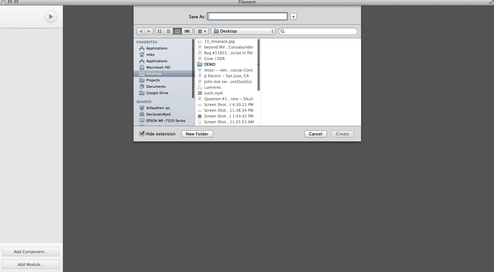
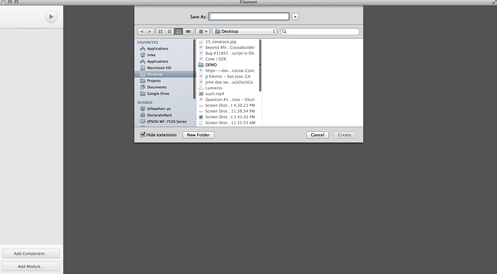
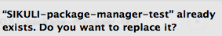
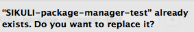
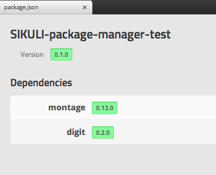
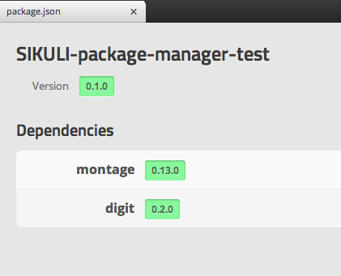

def findLumieres():
if exists():
click(getLastMatch())
elif exists(Pattern( ).similar(0.66)):
doubleClick(Pattern(
).similar(0.66)):
doubleClick(Pattern( ).targetOffset(-9,0))
elif exists(
).targetOffset(-9,0))
elif exists( ):
doubleClick(Pattern().targetOffset(-8,-1))
# Begin Actual Application
findLumieres()
# Create a new application
click(
):
doubleClick(Pattern().targetOffset(-8,-1))
# Begin Actual Application
findLumieres()
# Create a new application
click( )
wait(, 10)
lumieresRegion = getLastMatch().nearby(2)
type("d", Key.META)
type("SIKULI-package-manager-test")
lumieresRegion.click(
)
wait(, 10)
lumieresRegion = getLastMatch().nearby(2)
type("d", Key.META)
type("SIKULI-package-manager-test")
lumieresRegion.click( )
if exists():
overwriteSheet = getLastMatch()
overwriteSheet.nearby(100).click(
)
if exists():
overwriteSheet = getLastMatch()
overwriteSheet.nearby(100).click( )
waitVanish(overwriteSheet, 2)
sleep(2)
lumieresRegion.wait(
)
waitVanish(overwriteSheet, 2)
sleep(2)
lumieresRegion.wait( , 20)
explorer = lumieresRegion.find(
, 20)
explorer = lumieresRegion.find( ).below(500)
explorer.click(Pattern().exact().targetOffset(-37,2))
lumieresRegion.wait(, 5)
).below(500)
explorer.click(Pattern().exact().targetOffset(-37,2))
lumieresRegion.wait(, 5)